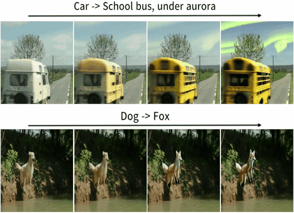
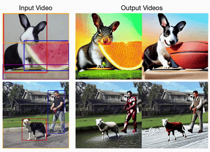
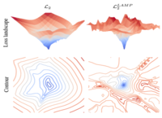
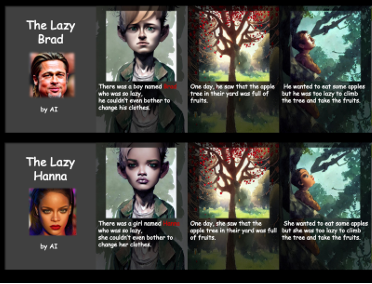

Hyeonho Jeong
About Me
I am a graduate student at KAIST AI, advised by Prof. Jong Chul Ye. Before that, I received my B.S. degree in Computer Science at Sungkyunkwan University in Aug. 2023.
My research interests lies in Controllable Video Generation and Editing.
I am also broadly interested in generative modeling across various modalities (image, video, 3D, 4D) using diffusion models.
Refer to my CV for details.
News
- [Dec. 2024] SMA is accepted to AAAI 2025.
- [Nov. 2024] VMC was presented as an oral presentation at KCCV 2024, and won finalist award at Qualcomm Innovation Fellowship Award 2024.
- [Jul. 2024] DreamMotion is accepted to ECCV 2024.
- [Jul. 2024] I started a research internship with Adobe,
mentored by Duygu Ceylan, Chun-Hao Huang, and Niloy J. Mitra. - [Feb. 2024] VMC is accepted to CVPR 2024.
- [Jan. 2024] Ground-A-Video is accepted to ICLR 2024.
- [Aug. 2023] I Started M.S at KAIST Gradudate School of AI. (Advisor: Prof. Jong Chul Ye)
Publications
-
 On Unifying Video Generation and Camera Pose Estimation
On Unifying Video Generation and Camera Pose Estimation
 Track4Gen: Teaching Video Diffusion Models to Track Points Improves Video Generation
Track4Gen: Teaching Video Diffusion Models to Track Points Improves Video Generation
 AAAI
Spectral Motion Alignment for Video Motion Transfer using Diffusion Models
AAAI
Spectral Motion Alignment for Video Motion Transfer using Diffusion Models
 ECCVDreamMotion: Space-Time Self-Similar Score Distillation for Zero-Shot Video Editing
 CVPR
VMC: Video Motion Customization using Temporal Attention Adaption for Text-to-Video Diffusion Models
CVPR
VMC: Video Motion Customization using Temporal Attention Adaption for Text-to-Video Diffusion Models
 ICLRGround-A-Video: Zero-shot Grounded Video Editing using Text-to-image Diffusion Models
 ICASSPNeural Network Training Strategy to Enhance Anomaly Detection Performance
Zero-shot Generation of Coherent Storybook from Plain Text Story using Diffusion Models
Teaching
- Teaching Assistant, Spring 2024, Generative Models and Unsupervised Learning (AI 618), KAIST
Powered by Jekyll and Minimal Light theme.